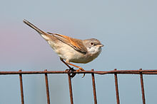
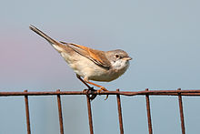

| Whitethroat | |
|---|---|
|  | |
| Conservation status | |
| Binomial name | |
| Sylvia communis Latham, 1787, England |
| Whitethroat | |
|---|---|
|  | |
| Conservation status | |
| Binomial name | |
| Sylvia communis Latham, 1787, England |
The Whitethroat, Sylvia communis, is a common and widespread typical warbler which breeds throughout Europe and across much of temperate western Asia. This small passerine bird is strongly migratory, and winters in tropical Africa, Arabia and Pakistan.
This is one of several Sylvia species that has distinct male and female plumages. Both sexes are mainly brown above and buff below, with chestnut fringes to the secondary remiges. The adult male has a grey head and a white throat. The female lacks the grey head, and the throat is duller. The Whitethroat's song is fast and scratchy, with a scolding tone.
This species was believed by some[citation needed] to be closely related to the Lesser Whitethroat, the species having evolved only during the end of the last ice age similar to the Willow Warbler and Chiffchaffs. But researchers learned soon that this is not correct, and now it is known that white throats are unreliable morphological markers for relationships in Sylvia. Chestnut wing patches, like white throats, seem to be plesiomorphic, but indicate phylogeny better. Nonetheless, apart from the Whitethroat not being closely related to the Lesser Whitethroat group, little can be resolved as it seems a fairly basal taxon.(Helbig 2001, Jønsson & Fjeldså 2006)
This is a bird of open country and cultivation, with bushes for nesting. The nest is built in low shrub or brambles, and 3-7 eggs are laid. Like most "warblers", it is insectivorous, but will also take berries and other soft fruit.

.jpg){kind=link}